год основания
1999
Профилактика и профосмотры
Медицинский центр «Доктор» · Ярославль
Многопрофильный центр: консультации врачей-специалистов, диагностика, профосмотры и медицинские книжки — детям и взрослым.
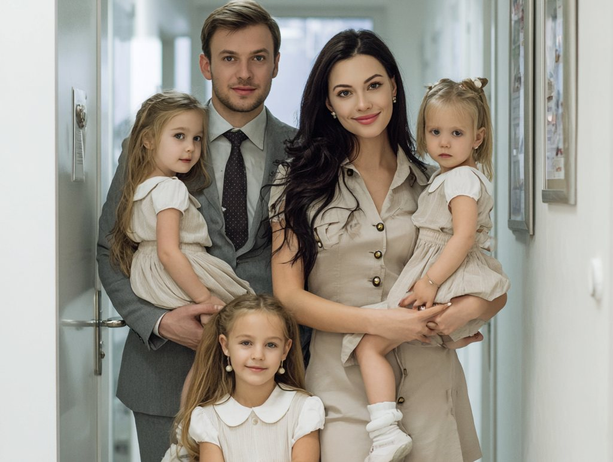
Мы оказываем амбулаторно-поликлиническую помощь детям и взрослым, проводим диагностику, профосмотры и оформляем медицинские книжки. Приём — по предварительной записи, в одном центре на Кирова, 12.
О центре
Консультативный приём ведут врачи-специалисты: терапевт, кардиолог, гастроэнтеролог, оториноларинголог, офтальмолог, невролог, дерматовенеролог, хирург, эндокринолог, гинеколог, психиатр, психотерапевт, стоматолог.
взрослое и детское отделенияЛабораторные, ультразвуковые и рентгенологические исследования, функциональная диагностика, маммография. УЗИ и обследования — в том числе для детей.
анализы · ультразвук · рентгенПредварительные и периодические медицинские осмотры, оформление и продление медицинской книжки, предрейсовые осмотры водителей, санитарный минимум.
для организаций и частных лицСО₂-лазер Bioxel: удаление новообразований, лазерная шлифовка кожи, лазерный пилинг, низкоинтенсивное лазерное облучение кожи.
СО₂-лазер BioxelВсё, что нужно, — в одном центре. Ярославль, ул. Кирова, 12. Запись по телефону или онлайн.
год основания
1999
Профилактика и профосмотры
пациентов в год
10тыс.
Более 10 тысяч в год
осмотренных
100тыс.
Медосмотры с 1999 года
медпунктов
30пунктов
В организациях Ярославля
Направления
Взрослое и детское отделения, анализы и исследования, профосмотры, вакцинация и стоматология — в одном центре.
Анализы и исследования Анализы перед госпитализацией, диагностика, check-up.
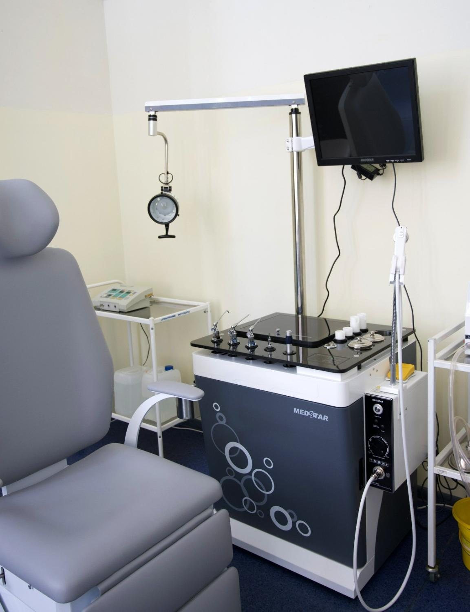
Исторический центр Ярославля,
улица Кирова, 12
Как это будет
Приём ведётся по предварительной записи: позвоните в центр или оставьте заявку на сайте. Стоимость услуги подскажут в регистратуре.
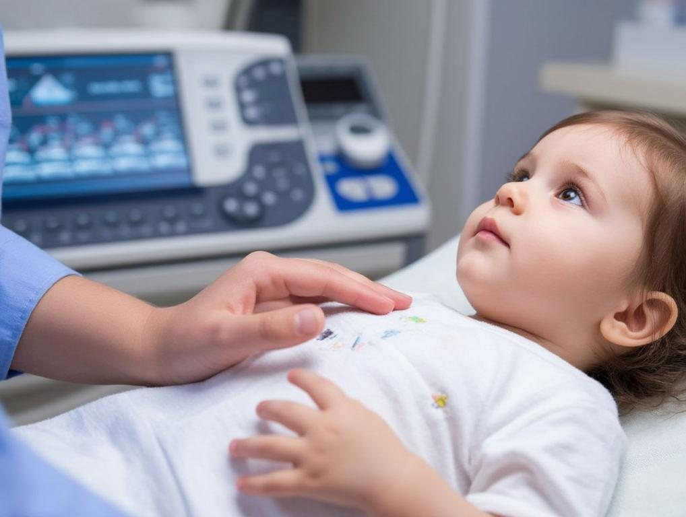
Звоните на +7 (4852) 73-24-25 или оставляете заявку на сайте — администратор подберёт удобное время.
по телефону или онлайнВрач-специалист ведёт осмотр и объясняет, что означает результат и что делать дальше. Приходите за 15 минут до начала, чтобы оформить документы.
взрослое и детское отделениеЛабораторные, ультразвуковые и рентгенологические исследования, функциональная диагностика — по назначению врача.
анализы · ультразвук · рентгенСправки, заключения и медицинские книжки оформляем в короткий срок и в соответствии с законодательством.
справки и медкнижкиЦены
Цены — с сайта медицинского центра. Итоговую стоимость услуги назовут в регистратуре при записи.
Специалисты
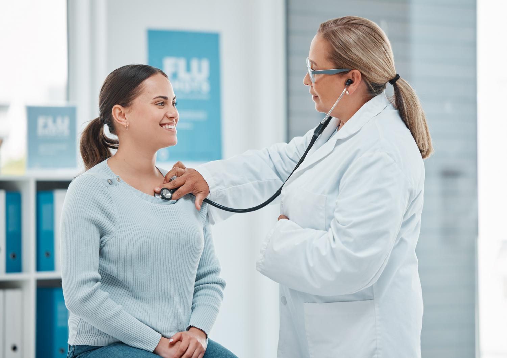
Первичный приём: определяет, с чем пациент пришёл, назначает обследование и лечение.
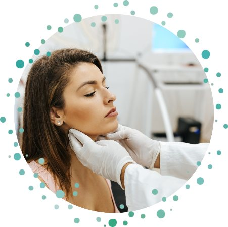
Приём по вопросам уха, горла и носа у взрослых и детей.
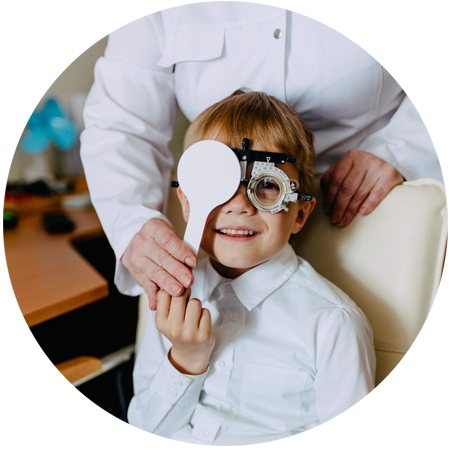
Проверка зрения у детей и взрослых.
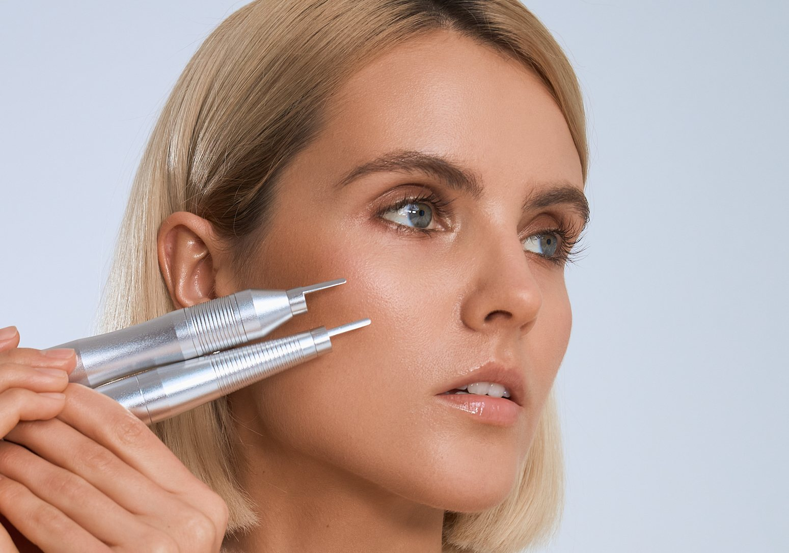
СО₂-лазер Bioxel: удаление новообразований, шлифовка кожи, пилинг.
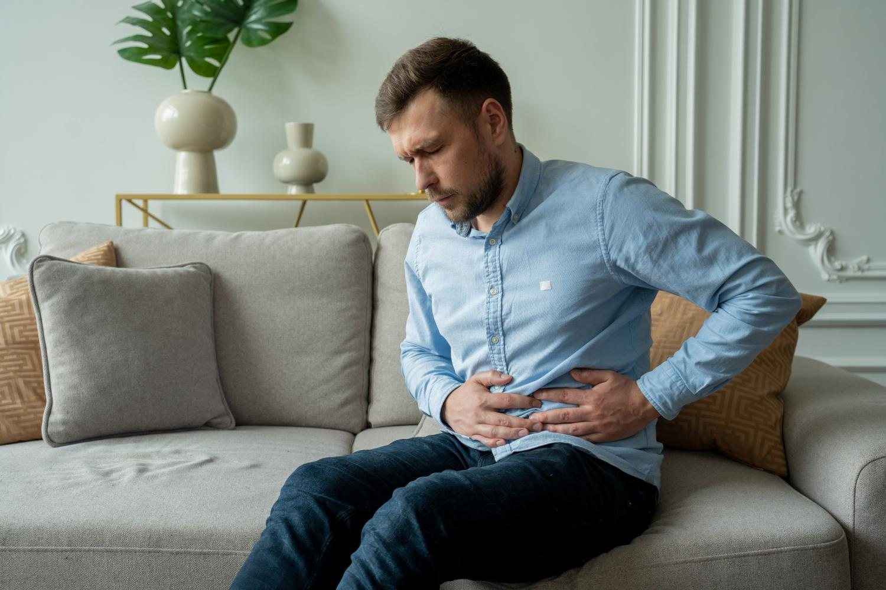
Приём гастроэнтеролога и «Гастро» check-up — комплексное обследование.
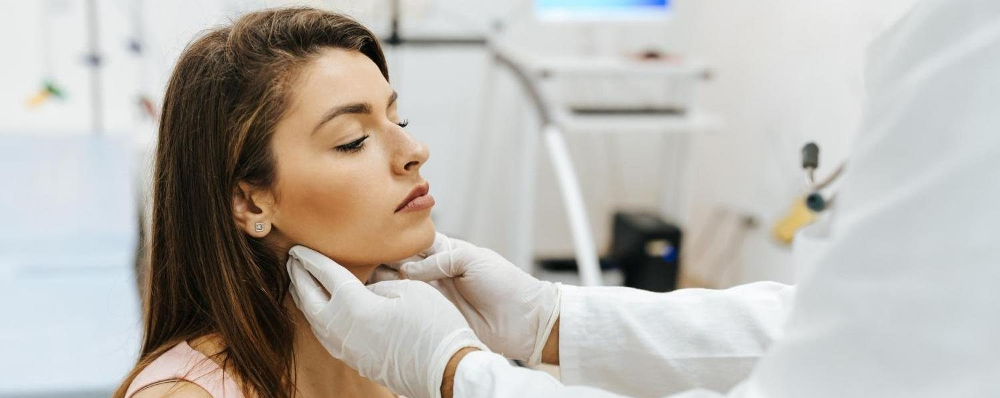
Чек-ап «Здоровая щитовидная железа» и другие комплексные обследования.
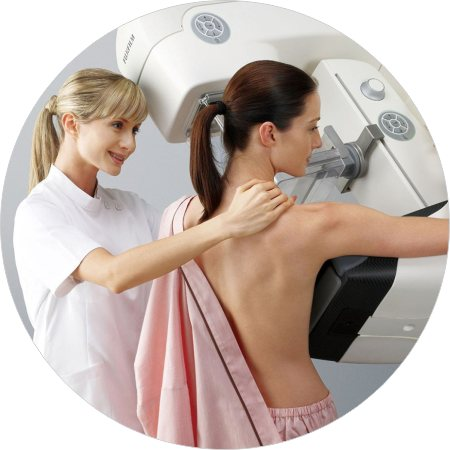
Приём гинеколога и маммография.
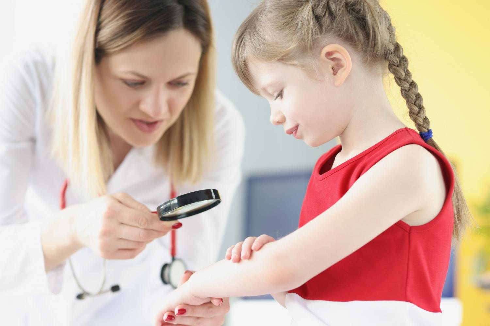
Аллерголог, дерматолог, кардиолог, офтальмолог, уролог-андролог и УЗИ для детей.
Отзывы пациентов — на карте центра и на странице отзывов.
Запись
пн–пт 8:00–19:00, сб 9:00–15:00
Что нужно
День
Время